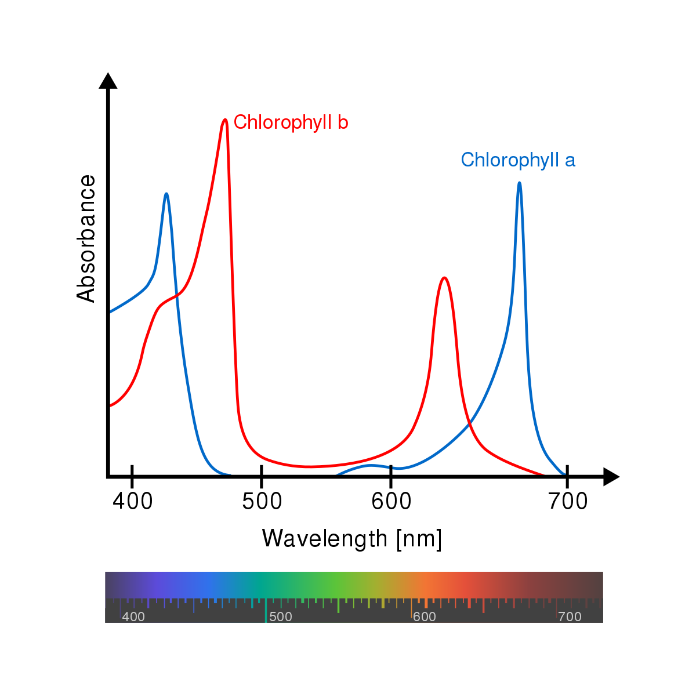

Más información sobre los índices

El NBR es un índice es diseñado para resaltar áreas quemadas en grandes zonas de incendio y tiene fórmula similar al NDVI. Considera longitudes de onda de infrarrojo cercano (NIR) e infrarrojo de onda corta (SWIR), regiones del espectro menos sensibles a los efectos atmosféricos y que pueden cuantificar con precisión la vegetación afectada por el incendio 3 4.
El NBR se calcula para las imágenes antes del incendio y para las imágenes posteriores al incendio, seleccionando un intervalo de tiempo de una semana antes y una semana después del incendio para asegurarse de tener imágenes. En caso de que hubiera más imágenes disponibles, se hace un mosaico entre ellas. Calculando la resta entre estos dos NBR (preNBR - postNBR) se obtiene el differenced Normalized Burn Ratio (dNBR), que se utiliza para la evaluación de la gravedad de las quemaduras.
El dNBR ha sido clasificado según los rangos de severidad de las quemaduras propuestos por el USGS. Valores más altos de dNBR indican un daño más severo, mientras valores negativos muestran una mayor productividad de la vegetación (regeneración). Las áreas no quemadas normalmente se atribuyen a valores cercanos a cero.
Clases de gravedad de quemaduras y umbrales propuestos por USGS.
En esta aplicación se pueden seleccionar las fechas de inicio y fin del incendio y la zona donde se produjo para obtener una estimación de la superficie quemada en hectarias, dividida por grados de severidad. El resultado obtenido se puede comparar con los datos oficiales publicados en la página del European Forest Fire Information System (EFFIS). Puedes poner por ejemplo las fechas del 04.08.18 (pre-fire images) y del 24.08.18 (post-fire images) y seleccionar la zona cerca de Luchente (Valencia), para visualizar el incendio que occurrió en el 2018.
Referencias
1. Doña, C., Miralles, V. C., Sánchez, J., Ferril, A., & Camacho, A. (2011). Herramienta para el estudio del estado de eutrofización de masas de agua continentales. Revista de teledetección: Revista de la Asociación Española de Teledetección, 36, 40-50.